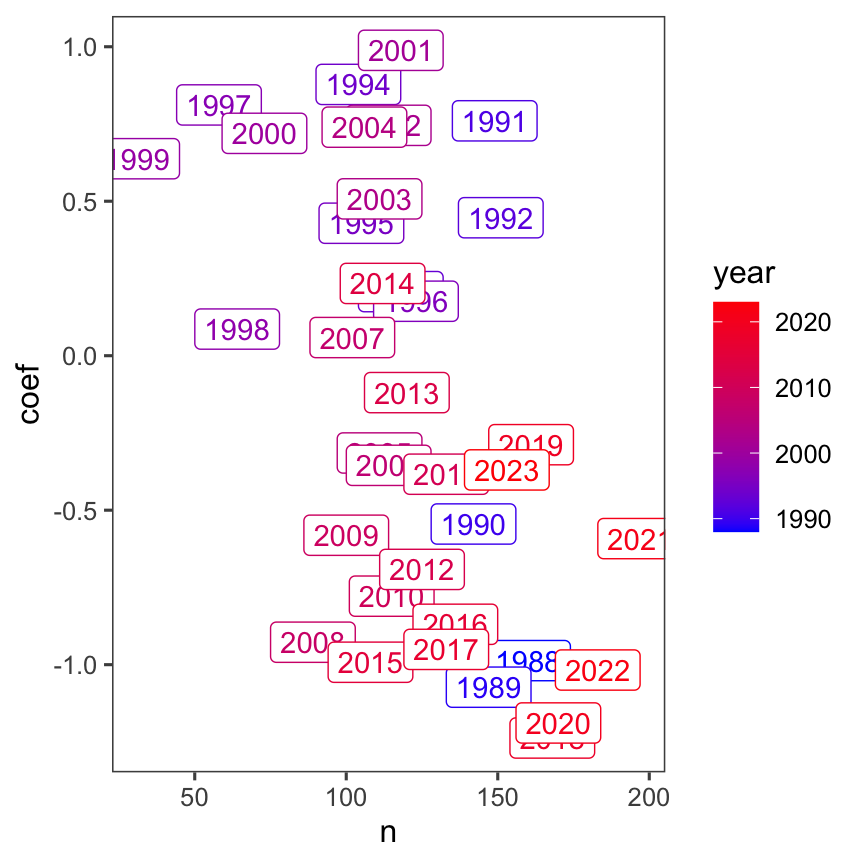
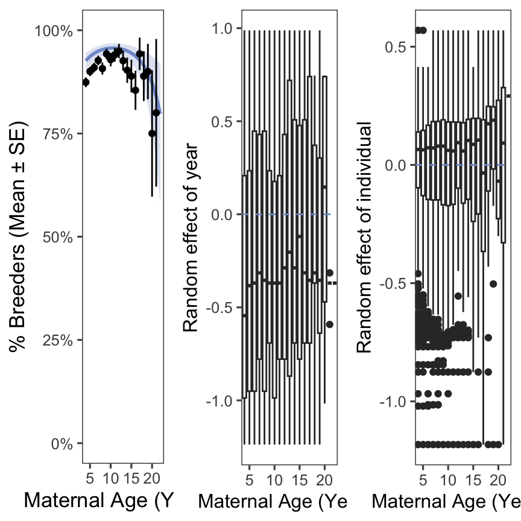

Elephant seal reproductive success declines with age.
Reproductive declines persist to the next generation (maternal effect senescence).
Seal phenology is shifted later for older animals and breeders.
Note: This paper is similar to another paper about polar bears (Ursus maritimus)(Naciri et al. 2022).
Results
H1: Age distribution and breeding status
We predicted that breeding success would decline with age. We found that breeding success increases to prime age, then decreases at older ages (Figure 1).

Generalized linear mixed model fit by maximum likelihood (Laplace
Approximation) [glmerMod]
Family: binomial ( logit )
Formula: observed_int ~ poly(age, 2) + (1 | animalID) + (1 | year)
Data: filter(sealdat)
AIC BIC logLik deviance df.resid
2566.9 2598.8 -1278.4 2556.9 4399
Scaled residuals:
Min 1Q Median 3Q Max
-6.0282 0.1768 0.2550 0.3507 0.7186
Random effects:
Groups Name Variance Std.Dev.
animalID (Intercept) 0.4677 0.6839
year (Intercept) 0.6126 0.7827
Number of obs: 4404, groups: animalID, 1203; year, 36
Fixed effects:
Estimate Std. Error z value Pr(>|z|)
(Intercept) 2.8314 0.1499 18.887 < 2e-16 ***
poly(age, 2)1 5.9335 3.7644 1.576 0.114974
poly(age, 2)2 -13.0049 3.4219 -3.800 0.000144 ***
---
Signif. codes: 0 '***' 0.001 '**' 0.01 '*' 0.05 '.' 0.1 ' ' 1
Correlation of Fixed Effects:
(Intr) p(,2)1
poly(ag,2)1 0.045
poly(ag,2)2 -0.055 -0.084
optimizer (Nelder_Mead) convergence code: 0 (OK)
unable to evaluate scaled gradient
Model failed to converge: degenerate Hessian with 1 negative eigenvalues
Figure 1: A: Age structure of northern elephant seals at Año Nuevo. B: Percentage of each age class that were observed breeding.
Population level prediction - the fact that the raw data falls above it comes from the fact that those age classes are correlated with years and individuals that were very successful.

Figure 2: ?(caption)
H2: Maternal effect senescence
We predicted that reproductive declines would carry over to the next generation - that is, pups born to older mothers would have decreased survival and recruitment success.
We found that neither pup survival nor recruitment is significantly affected by maternal age (Figure 3).
We reject our hypothesis: reproductive declines do not persist to the next generation, and there is no evidence of maternal effect senescence.
Figure 3: Pup survival decreases slightly, but survival and recruitment are not significantly affected by maternal age.
Results of the Pup Survival model, with individual and year as random effects:
Generalized linear mixed model fit by maximum likelihood (Laplace
Approximation) [glmerMod]
Family: binomial ( logit )
Formula: pup_survived ~ age + (1 | animalID) + (1 | year)
Data: surv_dat
AIC BIC logLik deviance df.resid
1035.0 1055.7 -513.5 1027.0 1290
Scaled residuals:
Min 1Q Median 3Q Max
-0.7285 -0.4442 -0.3323 -0.2613 4.0750
Random effects:
Groups Name Variance Std.Dev.
animalID (Intercept) 7.239e-10 2.691e-05
year (Intercept) 4.547e-01 6.743e-01
Number of obs: 1294, groups: animalID, 596; year, 28
Fixed effects:
Estimate Std. Error z value Pr(>|z|)
(Intercept) -1.90913 0.25971 -7.351 1.97e-13 ***
age -0.01730 0.02657 -0.651 0.515
---
Signif. codes: 0 '***' 0.001 '**' 0.01 '*' 0.05 '.' 0.1 ' ' 1
Correlation of Fixed Effects:
(Intr)
age -0.770
optimizer (Nelder_Mead) convergence code: 0 (OK)
boundary (singular) fit: see help('isSingular')
Results of the Pup Recruitment model, with individual and year as random effects:
Generalized linear mixed model fit by maximum likelihood (Laplace
Approximation) [glmerMod]
Family: binomial ( logit )
Formula: puprecruited ~ age + (1 | animalID) + (1 | year)
Data: filter(sealdat, year > 1984 & year < 2019)
AIC BIC logLik deviance df.resid
819.6 840.7 -405.8 811.6 1449
Scaled residuals:
Min 1Q Median 3Q Max
-0.4443 -0.3265 -0.2596 -0.2193 5.2172
Random effects:
Groups Name Variance Std.Dev.
animalID (Intercept) 0.01822 0.1350
year (Intercept) 0.34593 0.5882
Number of obs: 1453, groups: animalID, 682; year, 31
Fixed effects:
Estimate Std. Error z value Pr(>|z|)
(Intercept) -2.30849 0.32783 -7.042 1.9e-12 ***
age -0.04526 0.03345 -1.353 0.176
---
Signif. codes: 0 '***' 0.001 '**' 0.01 '*' 0.05 '.' 0.1 ' ' 1
Correlation of Fixed Effects:
(Intr)
age -0.693
Modeling the above metrics as quadratic, just in case:
Generalized linear mixed model fit by maximum likelihood (Laplace
Approximation) [glmerMod]
Family: binomial ( logit )
Formula: pup_survived ~ poly(age, 2) + (1 | animalID) + (1 | year)
Data: surv_dat
AIC BIC logLik deviance df.resid
1032.9 1058.8 -511.5 1022.9 1289
Scaled residuals:
Min 1Q Median 3Q Max
-0.7728 -0.4507 -0.3333 -0.2627 4.1358
Random effects:
Groups Name Variance Std.Dev.
animalID (Intercept) 4.006e-08 0.0002002
year (Intercept) 4.716e-01 0.6867111
Number of obs: 1294, groups: animalID, 596; year, 28
Fixed effects:
Estimate Std. Error z value Pr(>|z|)
(Intercept) -2.0577 0.1684 -12.217 <2e-16 ***
poly(age, 2)1 -3.4185 3.5044 -0.976 0.3293
poly(age, 2)2 -7.1972 3.7487 -1.920 0.0549 .
---
Signif. codes: 0 '***' 0.001 '**' 0.01 '*' 0.05 '.' 0.1 ' ' 1
Correlation of Fixed Effects:
(Intr) p(,2)1
poly(ag,2)1 0.033
poly(ag,2)2 0.094 0.302
Generalized linear mixed model fit by maximum likelihood (Laplace
Approximation) [glmerMod]
Family: binomial ( logit )
Formula: puprecruited ~ poly(age, 2) + (1 | animalID) + (1 | year)
Data: filter(sealdat, year > 1984 & year < 2019)
AIC BIC logLik deviance df.resid
820.8 847.2 -405.4 810.8 1448
Scaled residuals:
Min 1Q Median 3Q Max
-0.4466 -0.3217 -0.2586 -0.2187 5.5087
Random effects:
Groups Name Variance Std.Dev.
animalID (Intercept) 0.06163 0.2483
year (Intercept) 0.35381 0.5948
Number of obs: 1453, groups: animalID, 682; year, 31
Fixed effects:
Estimate Std. Error z value Pr(>|z|)
(Intercept) -2.687788 0.001366 -1968 <2e-16 ***
poly(age, 2)1 -11.669944 0.001365 -8550 <2e-16 ***
poly(age, 2)2 -6.934622 0.001365 -5081 <2e-16 ***
---
Signif. codes: 0 '***' 0.001 '**' 0.01 '*' 0.05 '.' 0.1 ' ' 1
Correlation of Fixed Effects:
(Intr) p(,2)1
poly(ag,2)1 0.000
poly(ag,2)2 0.000 0.000
optimizer (Nelder_Mead) convergence code: 0 (OK)
Model failed to converge with max|grad| = 0.0518078 (tol = 0.002, component 1)
Model is nearly unidentifiable: very large eigenvalue
- Rescale variables?
Neither were significant as 2nd order polynomials.
The model of Survival ~ Maternal age was significant before we treated Year as a random effect. Was that because pups born earlier in the study had more time to be seen again (i.e., a sampling artifact?) If so, the plot of the random effect of year should have a negative slope.
We also plotted survival bias to show that 95% of pups were resighted within 7 years. Both plots are supplemental.
[1] 86
Figure 4: A: Plotting the intercept of the random effect of year shows that variation in ocean conditions is likely driving patterns in survival, rather than age of mother. B: 95% of seals that survived were resighted within ~seven years of their birth.
There is a drop off in recent years that seems to support the idea that recent years have a sampling bias, but the earlier portion suggests that overall the variation is caused by ocean conditions and not sampling. See the Cohort paper!
H3a: Changes in pup sex ratio with increased maternal age
We found that as maternal age increases, pup sex skews slightly towards males - but it’s not significant.
Figure 5: Pup sex skews slightly towards males with increasing maternal age, but it’s not significant.
Results of the model for pup sex ratio:
Generalized linear mixed model fit by maximum likelihood (Laplace
Approximation) [glmerMod]
Family: binomial ( logit )
Formula: as.factor(pupsex) ~ age + (1 | animalID) + (1 | year)
Data: filter(sealdat, pupsex %in% c("M", "F"), age < 19)
AIC BIC logLik deviance df.resid
2461.9 2483.9 -1227.0 2453.9 1773
Scaled residuals:
Min 1Q Median 3Q Max
-1.2774 -1.0261 0.8293 0.9511 1.0844
Random effects:
Groups Name Variance Std.Dev.
animalID (Intercept) 0.02253 0.1501
year (Intercept) 0.02350 0.1533
Number of obs: 1777, groups: animalID, 796; year, 36
Fixed effects:
Estimate Std. Error z value Pr(>|z|)
(Intercept) -0.13793 0.13100 -1.053 0.2924
age 0.03115 0.01601 1.946 0.0517 .
---
Signif. codes: 0 '***' 0.001 '**' 0.01 '*' 0.05 '.' 0.1 ' ' 1
Correlation of Fixed Effects:
(Intr)
age -0.905
H3b: Changes to annual cycle timing with increased maternal age
We predicted that seals would shift the timing of their annual cycle.
We found that as maternal age increases, there are slight adjustments to the timing of life history events. These events (breeding/molting arrival/departure) are typically shifted later for older animals (Figure 6).
Figure 6: Successful breeding and increased maternal age both impact elephant seal annual cycles. A: Visualization of life history timing across ages, faceted by breeding status. White dashed lines on each panel represent the raw data from the other panel to facilitate comparisons between breeders and non-breeders. B: LMM coefficients for phenological parameters. The units for maternal age coefficients are in days per year. The coefficients for breeding status are in days. Black points are significant, gray points are not significant.
Supplemental table
Phenology
Age coef. (days/year)
Significance
Breeding status coef. (days)
Significance
BA
0.26 +- 0.07
p = 4e-04 (TRUE)
-6.58 +- 1.21
p = 0 (TRUE)
BD
0.42 +- 0.08
p = 0 (TRUE)
3.1 +- 1.23
p = 0.0117 (FALSE)
MA
1.44 +- 0.13
p = 0 (TRUE)
2.48 +- 2.3
p = 0.2802 (FALSE)
MD
0.97 +- 0.13
p = 0 (TRUE)
2.25 +- 2.24
p = 0.3142 (FALSE)
References
Naciri, Marwan, Jon Aars, Marie-Anne Blanchet, Olivier Gimenez, and Sarah Cubaynes. 2022. “Reproductive Senescence in Polar Bears in a Variable Environment.”Frontiers in Ecology and Evolution 10 (October). https://doi.org/10.3389/fevo.2022.920481.
Source Code
---title: "Elephant Seal Age JAE Intraspecific Variation"format: html: echo: false fig-width: 4.5 fig-height: 4.5 code-fold: true code-tools: true warning: falseeditor: visualbibliography: references.bib---```{r}#| label: setup#| include: false library(ggthemes)library(cowplot)library(lme4)library(lmerTest) # Loading this library will automatically append p-values to lmer models estimated using something called Satterthwaite's methodlibrary(merTools)library(tidyverse)library(ggeffects)library(patchwork)sealdat <-read_csv(here::here("data/raw/128L pull 2023_11_30.csv"), show_col_types =FALSE) %>%mutate(observed =if_else(observed =="B", "Breeder", "Non-breeder"), observed_int =if_else(observed =="Breeder", 1, 0), pup_survived = pupseeneveragain >0) %>%filter(age >3, year >1987)```# IntroductionOur hypotheses:1. Elephant seal reproductive success declines with age.2. Reproductive declines persist to the next generation (maternal effect senescence). 3. Seal phenology is shifted later for older animals and breeders.**Note**: *This paper is similar to another paper about polar bears (*Ursus maritimus*)* [@naciri2022].# Results### H1: Age distribution and breeding statusWe predicted that breeding success would decline with age. We found that breeding success increases to prime age, then decreases at older ages (@fig-age_dist).```{r}#| label: age_breeding_mod#| #| fig-width: 9breeding_mod_bad <-glmer(observed_int ~poly(age, 2) + (1| animalID) + (1| year),data =filter(sealdat), family ="binomial")count(sealdat, year) %>%left_join(as_tibble(ranef(breeding_mod_bad)$year, rownames ="year") %>%mutate(year =as.numeric(year)) %>%rename(coef =`(Intercept)`),by ="year") %>%ggplot(aes(n, coef, color = year, label = year)) +geom_point() +geom_label() +scale_color_gradient(low ="blue", high ="red") +theme_few()breeding_mod <-glmer(observed_int ~poly(age, 2) + (1| animalID) + (1| year),data =filter(sealdat), family ="binomial")breed_pred <-ggpredict(breeding_mod, terms =c("age [all]"))summary(breeding_mod)``````{r}#| label: fig-age_dist#| fig-cap: "A: Age structure of northern elephant seals at Año Nuevo. B: Percentage of each age class that were observed breeding."#| fig-width: 9#Age distribution panel A age_dist <- sealdat %>%filter(age <22) %>%group_by(age) %>%count(age) %>%ggplot(aes(x = age, y = n)) +geom_col(fill ="#829BD1") +labs(x ="Age (Years)", y ="Number of individuals") +theme_few() +theme(axis.title =element_text(size =13))#Panel B: percentage of each age class that were breeders or nonbreedersbreed_nonbreed <- sealdat %>%group_by(age) %>%summarize(n_observed =sum(!is.na(observed)), perc_breed =sum(observed =="Breeder") / n_observed, se = (perc_breed * (1- perc_breed) / n_observed)^0.5) %>%filter(age <22) %>%ggplot(aes(x = age, y = perc_breed)) +geom_ribbon(aes(x, ymin = conf.low, ymax = conf.high), breed_pred,inherit.aes =FALSE,fill ="#829BD1",alpha =0.25) +geom_line(aes(x, predicted), breed_pred,inherit.aes =FALSE,color ="#829BD1",linewidth =1) +geom_point() +geom_errorbar(aes(ymin = perc_breed - se, ymax = perc_breed + se), width =0) +scale_y_continuous(labels = scales::percent, limits =c(.4, 1)) +labs(x ="Maternal Age (Years)", y ="% Breeders (Mean ± SE)") +theme_few() +theme(axis.title =element_text(size =13))plot_grid(age_dist, breed_nonbreed, nrow =1, labels ="AUTO")ggsave("outputs/agefig1.png", plot = , height =4, width =9)```Population level prediction - the fact that the raw data falls above it comes from the fact that those age classes are correlated with years and individuals that were very successful.```{r}#| label: fig-breeding_bias#| fig-width: 9year_coef <-as_tibble(ranef(breeding_mod)$year, rownames ="year") %>%mutate(year =as.numeric(year)) %>%rename(coef =`(Intercept)`)animal_coef <-as_tibble(ranef(breeding_mod)$animalID, rownames ="animalID") %>%mutate(animalID =as.numeric(animalID)) %>%rename(coef =`(Intercept)`)year_bias <- sealdat %>%left_join(year_coef, by ="year") %>%mutate(age =factor(age)) %>%ggplot(aes(age, coef)) +geom_boxplot() +geom_hline(yintercept =0, color ="#829BD1", linetype ="dashed") +scale_x_discrete("Maternal Age (Years)", breaks =seq(5, 20, by =5)) +ylab("Random effect of year") +theme_few()animalID_bias <- sealdat %>%left_join(animal_coef, by ="animalID") %>%mutate(age =factor(age)) %>%ggplot(aes(age, coef)) +geom_boxplot() +geom_hline(yintercept =0, color ="#829BD1", linetype ="dashed") +scale_x_discrete("Maternal Age (Years)", breaks =seq(5, 20, by =5)) +ylab("Random effect of individual") +theme_few()plot_grid(breed_nonbreed, year_bias, animalID_bias, nrow =1)```### H2: Maternal effect senescenceWe predicted that reproductive declines would carry over to the next generation - that is, pups born to older mothers would have decreased survival and recruitment success.We found that neither pup survival nor recruitment is significantly affected by maternal age (@fig-repro_age).We reject our hypothesis: reproductive declines do not persist to the next generation, and there is no evidence of maternal effect senescence.```{r}#| label: fig-repro_age#| fig-cap: "Pup survival decreases slightly, but survival and recruitment are not significantly affected by maternal age."#| fig-width: 9#B Pup survival and recruitment doesn't change with increased maternal age.pup_surv_recruit <- sealdat %>%mutate(pup_surv =ifelse(pupseeneveragain >0, 1, 0)) %>%filter(pupsex =="F", pupyearborn <2016) %>%group_by(age) %>%summarize(n_surv =sum(!is.na(pup_surv)),mean_surv =sum(pup_surv, na.rm =TRUE) / n_surv, se_surv = (mean_surv * (1- mean_surv) / n_surv)^0.5,n_recruit =sum(!is.na(puprecruited)), mean_recruit =sum(puprecruited, na.rm =TRUE) / n_recruit, se_recruit = (mean_recruit * (1- mean_recruit) / n_recruit)^0.5) %>%pivot_longer(cols =c(mean_surv, se_surv, mean_recruit, se_recruit), names_to =c("stat", "metric"), names_pattern ="(.*)_(.*)") %>%pivot_wider(names_from ="stat", values_from ="value") %>%mutate(low = mean - se, high = mean + se, age = age +ifelse(metric =="surv", -0.1, 0.1), metric =factor(metric, levels =c("recruit", "surv"), labels =c("Recruitment", "Survival"))) %>%filter(n_surv >5) %>%ggplot(aes(x = age, y = mean, color = metric)) +geom_pointrange(aes(ymin = low, ymax = high)) +scale_color_manual(values =c("#829BD1", "#E9B668")) +scale_y_continuous(labels = scales::percent, limits =c(0, .5)) +labs(x ="Maternal Age (Years)", y ="% Pups (Mean ± SE)") +theme_few() +theme(legend.position =c(0.1,0.97), legend.justification =c(0,1), legend.title =element_blank(), legend.direction ="horizontal", axis.title =element_text(size =13))pup_surv_recruit```Results of the Pup Survival model, with individual and year as random effects:```{r}#Panel B Survival Modelsurv_dat <- sealdat %>%filter(pupyearborn <2016)pup_survival_model <-glmer(pup_survived ~ age + (1| animalID) + (1| year),data = surv_dat,family ="binomial")summary(pup_survival_model)```Results of the Pup Recruitment model, with individual and year as random effects:```{r}#Panel B Recruitment Modelpup_recruit_model <-glmer(puprecruited ~ age + (1| animalID) + (1| year),data =filter(sealdat, year >1984& year <2019), family ="binomial")summary(pup_recruit_model)```Modeling the above metrics as quadratic, just in case:```{r}surv_dat <- sealdat %>%filter(pupyearborn <2016)pup_survival_model <-glmer(pup_survived ~poly(age, 2) + (1| animalID) + (1| year),data = surv_dat,family ="binomial")summary(pup_survival_model)pup_recruit_model <-glmer(puprecruited ~poly(age, 2) + (1| animalID) + (1| year),data =filter(sealdat, year >1984& year <2019), family ="binomial")summary(pup_recruit_model)```Neither were significant as 2nd order polynomials.The model of Survival \~ Maternal age was significant before we treated Year as a random effect. Was that because pups born earlier in the study had more time to be seen again (i.e., a sampling artifact?) If so, the plot of the random effect of year should have a negative slope.We also plotted survival bias to show that 95% of pups were resighted within 7 years. Both plots are supplemental.```{r}#| label: fig-surv_bias#| fig-cap: "A: Plotting the intercept of the random effect of year shows that variation in ocean conditions is likely driving patterns in survival, rather than age of mother. B: 95% of seals that survived were resighted within ~seven years of their birth."#| fig-width: 9year_ranef <-ranef(pup_survival_model)$year %>%as_tibble(rownames ="year") %>%mutate(year =as.numeric(year)) %>%rename(intercept =`(Intercept)`)year_ranef_plot <-ggplot(year_ranef, aes(year, intercept)) +geom_point() +geom_smooth(method ="loess", formula = y ~ x,color ="red") +theme_classic()survival_bias <- sealdat %>%group_by(animalID) %>%summarize(first_resight_yrs =min(age))survival95 <-quantile(survival_bias$first_resight_yrs, 0.95)#n for 95% quantilesum(survival_bias$first_resight_yrs >7)survival_bias_plot <-ggplot(survival_bias, aes(x = first_resight_yrs)) +stat_ecdf() +geom_vline(xintercept = survival95, linetype ="dashed", color ="red") +scale_x_continuous(limits =c(0, 10)) +theme_classic()plot_grid(year_ranef_plot, survival_bias_plot, nrow =1, labels ="AUTO")```There is a drop off in recent years that seems to support the idea that recent years have a sampling bias, but the earlier portion suggests that overall the variation is caused by ocean conditions and not sampling. See the Cohort paper!### H3a: Changes in pup sex ratio with increased maternal ageWe found that as maternal age increases, pup sex skews slightly towards males - but it's not significant.```{r}#| label: fig-sex_ratio#| fig-cap: "Pup sex skews slightly towards males with increasing maternal age, but it's not significant."#| fig-width: 9#A: Pup sex shifts towards males with increasing maternal age, but it's not significant.pup_sex <- sealdat %>%filter(pupsex %in%c("M", "F"), age <19) %>%group_by(age, pupsex) %>%count(pupsex) %>%pivot_wider(values_from = n, names_from = pupsex) %>%mutate(num = M + F,percf = F / num,se = (percf * (1- percf) / num)^0.5) %>%ggplot(aes(x = age, y = percf, weight = num)) +geom_hline(yintercept =0.5, lty =2, color ="#829BD1") +geom_point() +geom_errorbar(aes(ymin = percf - se, ymax = percf + se), width =0) +scale_y_continuous(labels = scales::percent, limits =c(0, NA)) +labs(x ="Maternal Age (Years)", y ="% Female Pups (Mean ± SE)") +theme_few() +theme(axis.title =element_text(size =13))pup_sex```Results of the model for pup sex ratio:```{r}pup_sex_mod <-glmer(as.factor(pupsex) ~ age + (1| animalID) + (1| year),data =filter(sealdat, pupsex %in%c("M", "F"), age <19), family ="binomial")summary(pup_sex_mod)```### H3b: Changes to annual cycle timing with increased maternal ageWe predicted that seals would shift the timing of their annual cycle.We found that as maternal age increases, there are slight adjustments to the timing of life history events. These events (breeding/molting arrival/departure) are typically shifted later for older animals (@fig-phenology).```{r}seal_phenology <- sealdat %>%mutate(BA = firstobsbreeddoy, BD = firstobsbreeddoy + breeddur, MA = lastobsmoltdoy - moltdur, MD = lastobsmoltdoy) %>%drop_na(age, BA, BD, MA, MD)phenology_n <-unique(seal_phenology$animalID)timing_summary <- seal_phenology %>%group_by(age, observed) %>%summarize(across(BA:MD, mean), .groups ="drop") %>%pivot_longer(cols =-c(age, observed), names_to ="event", values_to ="doy") %>%group_by(age, observed) %>%group_modify(\(data, keys) {tibble(event =c("Long trip", "Breeding", "Short trip", "Molting", "longtrip2"),doy =c(data$doy, 365) -c(0, data$doy)) }) %>%ungroup() %>%mutate(event =factor(event, levels =c("Long trip", "Breeding", "Short trip", "Molting", "longtrip2")))timing_summary_flipped <- timing_summary %>%mutate(observed =ifelse(observed =="Breeder","Non-breeder","Breeder")) %>%filter(event !="longtrip2")```The table is supplemental.```{r}#| label: fig-phenology#| fig-height: 7#| fig-width: 7#| fig-cap: "Successful breeding and increased maternal age both impact elephant seal annual cycles. A: Visualization of life history timing across ages, faceted by breeding status. White dashed lines on each panel represent the raw data from the other panel to facilitate comparisons between breeders and non-breeders. B: LMM coefficients for phenological parameters. The units for maternal age coefficients are in days per year. The coefficients for breeding status are in days. Black points are significant, gray points are not significant."phen_plot1 <-ggplot(timing_summary, aes(x = age, y = doy, fill = event)) +geom_area(position =position_stack(reverse =TRUE),color =NA) +geom_line(position =position_stack(reverse =TRUE),color ="white") +geom_line(data = timing_summary_flipped,position =position_stack(reverse =TRUE),color ="white",linetype ="dashed",alpha =0.5) +scale_fill_discrete(type =c("#829BD1", "#E9B668", "#7EC6CC", "#E091B9", "#829BD1"),breaks =c("Long trip", "Breeding", "Short trip", "Molting")) +scale_x_continuous("Maternal Age (Years)", expand =expansion(mult =0)) +scale_y_continuous("Day of Year", expand =expansion(mult =0)) +facet_grid(cols =vars(observed)) +theme_few() +theme(axis.title =element_text(size =12),panel.spacing =unit(1, "lines"))# Utility functions for model fitting and coefficient extractionfit_model <-function(dat) {lmer(doy ~ age + observed + (1| animalID) + (1| year), data = dat)}extract_estimate <-function(models, param) {map_dbl(models, \(mod) summary(mod)$coefficients[param, "Estimate"])}extract_stderr <-function(models, param) {map_dbl(models, \(mod) summary(mod)$coefficients[param, "Std. Error"])}extract_pval <-function(models, param) {map_dbl(models, \(mod) summary(mod)$coefficients[param, "Pr(>|t|)"])}# This data frame contains a model for each phenological variable w.r.t. agephenology_models <- seal_phenology %>%pivot_longer(BA:MD, names_to ="phenology", values_to ="doy") %>%select(phenology, observed, doy, age, animalID, year) %>%mutate(observed =factor(observed, levels =c("Non-breeder", "Breeder"))) %>%nest(model_data =c(doy, age, observed, animalID, year)) %>%mutate(model =map(model_data, fit_model),age_coef =extract_estimate(model, "age"),age_stderr =extract_stderr(model, "age"),age_pval =extract_pval(model, "age"),age_signif = age_pval *8<0.05,breeder_coef =extract_estimate(model, "observedBreeder"),breeder_stderr =extract_stderr(model, "observedBreeder"),breeder_pval =extract_pval(model, "observedBreeder"),breeder_signif = breeder_pval *8<0.05,)phen_wrapped <-tibble(event_begin =c(-Inf, 1:4),event_end =c(1:4, Inf),event = timing_summary$event[0:5])phen_plot2 <- phenology_models %>%select(-c(model_data, model)) %>%pivot_longer(c(ends_with("coef"), ends_with("stderr"), ends_with("signif")),names_to =c("param", "metric"),names_sep ="_",values_to ="value") %>%pivot_wider(names_from = metric, values_from = value) %>%mutate(signif =as.logical(signif), param =factor(param, labels =c("'Delay with maternal age (days year'^-1 * ')'", "'Delay with breeding (days)'")), phenology =factor(phenology, labels =c("Breeding\narrrival", "Breeding\ndeparture", "Molt\narrrival", "Molt\ndeparture"))) %>%ggplot(aes(x = coef, y = phenology)) +# Prevent geom_rect() from establishing a continuous y-axis scalegeom_point(alpha =0) +geom_rect(aes(xmin =-Inf, xmax =Inf,ymin = event_begin, ymax = event_end,fill = event), phen_wrapped,inherit.aes =FALSE) +geom_pointrange(aes(xmin = coef - stderr, xmax = coef + stderr,color = signif)) +scale_color_manual(values =c("FALSE"="grey50", "TRUE"="black"),guide ="none") +scale_fill_discrete(type =c("#829BD1", "#E9B668", "#7EC6CC", "#E091B9", "#829BD1"),breaks =c("Long trip", "Breeding", "Short trip", "Molting")) +expand_limits(x =0) +facet_grid(cols =vars(param), scales ="free_x", switch ="x",labeller = label_parsed) +theme_few() +theme(axis.title =element_blank(),legend.direction ="horizontal",legend.title =element_blank(),strip.placement ="outside",strip.text =element_text(size =12, color ="black"),panel.spacing =unit(1, "lines"))plot_grid(get_legend(phen_plot2), phen_plot1 +theme(legend.position ="none"), phen_plot2 +theme(legend.position ="none"),align ="v",axis ="lr",labels =c("", "A", "B"),ncol =1,rel_heights =c(0.1, 1, 1))ggsave("outputs/agefig4.png", plot = , height =9, width =9)table(seal_phenology$age,seal_phenology$observed)```Supplemental table```{r}phenology_models %>%select(-c(model_data, model)) %>%pivot_longer(age_coef:breeder_signif, names_to =c("param", "metric"),names_sep ="_",values_to ="value") %>%pivot_wider(names_from = metric, values_from = value) %>%mutate(coef =str_glue("{round(coef, 2)} +- {round(stderr, 2)}"),signif =str_glue("p = {round(pval, 4)} ({signif == 1})")) %>%select(-c(stderr, pval)) %>%pivot_wider(names_from = param, values_from =c(coef, signif)) %>%select(phenology, ends_with("age"), ends_with("breeder")) %>% knitr::kable(col.names =c("Phenology", "Age coef. (days/year)", "Significance", "Breeding status coef. (days)", "Significance")) %>% kableExtra::kable_styling()```